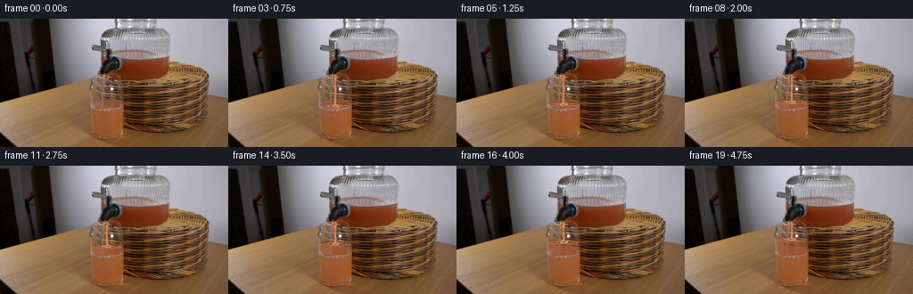
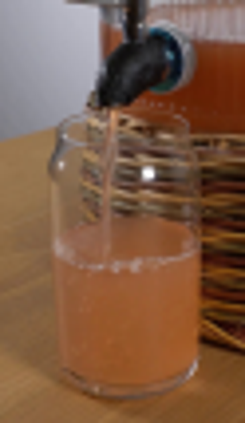
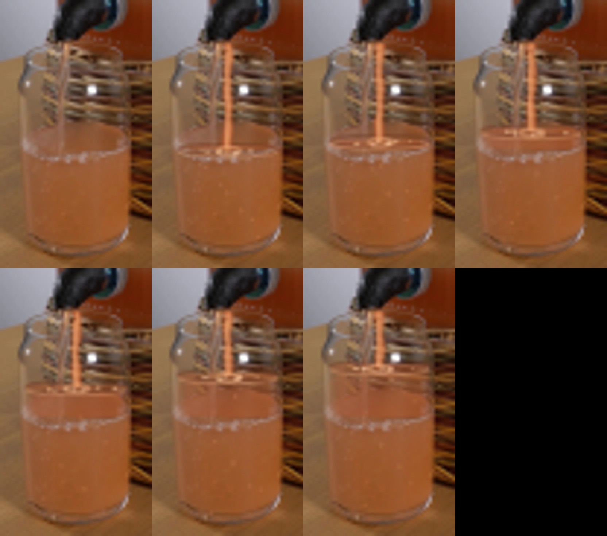
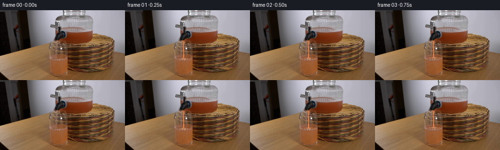

CODING AGENTS AS PIXEL WORLD MODELS
traex/GPT-5.6-Sol · 0072
点击播放 · 原生 RGB 像素
逐轮保存的候选
回放视频、检查图与代码变化。
每份候选均可单独播放。实际图片检查记录在下方工具轨迹中。
候选 01播放与检查图
点击播放 · 原生 RGB 像素

展开代码变化
--- 上一保存版本
+++ 本次保存版本
@@ -0,0 +1,193 @@
+"""Generate a short, locked-camera animation of the dispenser filling the glass.
+
+The source photograph is retained everywhere except the transparent interior of
+the receiving glass. All motion is analytic: a rising, optically translucent
+juice volume, a slightly fluctuating gravity-fed stream, a moving meniscus and
+small entrained bubbles.
+"""
+
+from pathlib import Path
+
+import cv2
+import numpy as np
+from PIL import Image
+
+import artifact_io
+
+
+ROOT = Path(__file__).resolve().parent
+S = 4 # supersampling for sub-pixel glass/stream edges
+
+
+def soft_polygon(points, shape=(144, 256), blur=0.0):
+ """Return an antialiased mask for a polygon in image coordinates."""
+ h, w = shape
+ canvas = np.zeros((h * S, w * S), np.uint8)
+ pts = np.round(np.asarray(points, np.float32) * S).astype(np.int32)
+ cv2.fillPoly(canvas, [pts], 255, lineType=cv2.LINE_AA)
+ if blur:
+ canvas = cv2.GaussianBlur(canvas, (0, 0), blur * S)
+ return cv2.resize(canvas, (w, h), interpolation=cv2.INTER_AREA).astype(np.float32) / 255.0
+
+
+def soft_ellipse(cx, cy, rx, ry, shape=(144, 256), thickness=-1, blur=0.0):
+ h, w = shape
+ m = np.zeros((h * S, w * S), np.uint8)
+ cv2.ellipse(
+ m,
+ (round(cx * S), round(cy * S)),
+ (max(1, round(rx * S)), max(1, round(ry * S))),
+ 0,
+ 0,
+ 360,
+ 255,
+ thickness if thickness < 0 else max(1, round(thickness * S)),
+ cv2.LINE_AA,
+ )
+ if blur:
+ m = cv2.GaussianBlur(m, (0, 0), blur * S)
+ return cv2.resize(m, (w, h), interpolation=cv2.INTER_AREA).astype(np.float32) / 255.0
+
+
+def over(frame, color, alpha):
+ """Alpha composite a constant RGB color into a float frame."""
+ a = np.clip(alpha, 0, 1)[..., None]
+ frame[:] = frame * (1.0 - a) + np.asarray(color, np.float32) * a
+
+
+def glass_bounds(y):
+ """Approximate inside edges of the subtly tapered receiving glass."""
+ if y < 80:
+ q = np.clip((y - 70) / 10, 0, 1)
+ return 111 - 7 * q, 129 + 7 * q
+ if y < 92:
+ q = (y - 80) / 12
+ return 104 - 2.0 * q, 136 + 2.0 * q
+ if y < 126:
+ q = (y - 92) / 34
+ return 102 + 1.0 * q, 138 - 0.5 * q
+ q = np.clip((y - 126) / 9, 0, 1)
+ return 103 + 4 * q, 137.5 - 3 * q
+
+
+def liquid_mask(level):
+ ys = np.arange(int(np.floor(level)), 136, dtype=np.float32)
+ left = [(glass_bounds(float(y))[0], float(y)) for y in ys]
+ right = [(glass_bounds(float(y))[1], float(y)) for y in ys[::-1]]
+ return soft_polygon(left + right, blur=0.18)
+
+
+def stream_mask(t, level, extra=0.0):
+ """A narrow irregular polygon beginning directly below the black tap."""
+ top, bottom = 63.0, level + 0.5
+ ys = np.linspace(top, bottom, 15)
+ # Real liquid streams neck down, with tiny deterministic pressure ripples.
+ centers = 120.0 + 0.24 * np.sin(0.30 * ys + 2.2 * t) + 0.13 * np.sin(0.77 * ys - 1.3 * t)
+ widths = 1.35 + 0.24 * np.sin(0.48 * ys + 1.8 * t) + extra
+ left = [(x - w, y) for x, w, y in zip(centers, widths, ys)]
+ right = [(x + w, y) for x, w, y in zip(centers[::-1], widths[::-1], ys[::-1])]
+ return soft_polygon(left + right, blur=0.12)
+
+
+def make_frames():
+ base_u8 = np.asarray(Image.open(ROOT / "first_frame.png").convert("RGB"), dtype=np.uint8)
+ base = base_u8.astype(np.float32)
+ h, w = base_u8.shape[:2]
+ yy, xx = np.mgrid[:h, :w]
+
+ # Bright pixels in this region are pre-existing glass reflections. Keeping
+ # them mostly uncolored is important to retain the photographic glass look.
+ luminosity = base.mean(axis=2)
+ specular = np.clip((luminosity - 154.0) / 75.0, 0.0, 0.80)
+
+ frames = [base_u8.copy()]
+ for k in range(1, 20):
+ t = k / 4.0
+ progress = k / 19.0
+ # Nearly constant volumetric flow, with a gentle startup already under way.
+ level = 99.7 - 18.1 * (0.92 * progress + 0.08 * progress * progress)
+ frame = base.copy()
+
+ full = liquid_mask(level)
+ old = liquid_mask(99.7)
+ newly_filled = np.clip(full - old, 0, 1)
+
+ # Grapefruit juice is cloudy: upper layers remain translucent enough to
+ # preserve the basket distortion seen through the actual glass.
+ depth = np.clip((yy - level) / 42.0, 0, 1)
+ edge_factor = np.clip(np.minimum(xx - 101.0, 139.0 - xx) / 5.0, 0.35, 1.0)
+ alpha_new = newly_filled * (0.49 + 0.12 * depth) * edge_factor * (1.0 - 0.72 * specular)
+ # Gentle top-to-bottom color density and uneven cloudy mixing.
+ swirl = 2.8 * np.sin(0.23 * xx + 0.16 * yy + 1.5 * t) * np.exp(-((xx - 120) / 19) ** 2)
+ target = np.empty_like(frame)
+ target[..., 0] = 174.0 + swirl - 7.0 * depth
+ target[..., 1] = 91.0 + 2.0 * swirl - 13.0 * depth
+ target[..., 2] = 52.0 + 1.3 * swirl - 12.0 * depth
+ a = alpha_new[..., None]
+ frame = frame * (1 - a) + target * a
+
+ # As fresh juice enters, the original water/juice mixture below becomes
+ # very slightly richer and more uniform, rather than abruptly changing.
+ mix_alpha = old * progress * 0.105 * (1.0 - 0.70 * specular)
+ mix_target = np.zeros_like(frame)
+ mix_target[..., 0] = 164 + 2 * np.sin(yy * 0.20 + t)
+ mix_target[..., 1] = 77 + 2 * np.sin(xx * 0.17 - t)
+ mix_target[..., 2] = 38
+ a = mix_alpha[..., None]
+ frame = frame * (1 - a) + mix_target * a
+
+ # Dark rear meniscus plus a thin illuminated forward rim. The small
+ # vertical bob is a physical response to stream impact, not camera motion.
+ bob = 0.17 * np.sin(4.0 * t)
+ surf_y = level + bob
+ meniscus = soft_ellipse(120.0, surf_y + 0.20, 17.1, 2.05, thickness=0.8, blur=0.08)
+ meniscus *= soft_polygon([(102, surf_y - 2), (139, surf_y - 2), (139, surf_y + 4), (102, surf_y + 4)])
+ over(frame, (112, 59, 35), meniscus * 0.42)
+ front_rim = soft_ellipse(120.0, surf_y + 1.15, 16.7, 1.65, thickness=0.55, blur=0.05)
+ front_rim *= soft_polygon([(101, surf_y + 0.7), (140, surf_y + 0.7), (140, surf_y + 4), (101, surf_y + 4)])
+ over(frame, (231, 165, 121), front_rim * 0.38)
+
+ # Continuous stream. A darker outer body and a narrow moving highlight
+ # make a much more convincing flow than a single painted line.
+ sm = stream_mask(t, surf_y, extra=0.16)
+ over(frame, (188, 94, 49), sm * 0.64)
+ core = stream_mask(t + 0.10, surf_y, extra=-0.72)
+ over(frame, (242, 157, 103), core * 0.58)
+ glint_x = 119.65 + 0.18 * np.sin(2.1 * t)
+ glint = soft_polygon([(glint_x - .22, 66), (glint_x + .28, 66),
+ (glint_x + .16, surf_y), (glint_x - .30, surf_y)], blur=.10)
+ over(frame, (255, 196, 143), glint * 0.30)
+
+ # Impact dimple and a changing cluster of pale foam beads around it.
+ dimple = soft_ellipse(120.2, surf_y + 0.8, 4.0, 1.25, thickness=0.65, blur=.04)
+ over(frame, (245, 178, 129), dimple * 0.42)
+ for j in range(9):
+ ang = 0.73 * j + 0.31 * np.sin(t * 2.2 + j)
+ bx = 120 + (3.0 + 1.30 * j) * np.cos(ang)
+ by = surf_y + 1.0 + 0.50 * np.sin(ang) + 0.26 * np.sin(3.1 * t + j)
+ r = 0.35 + 0.13 * ((j + k) % 3)
+ bead = soft_ellipse(bx, by, r * 1.35, r, blur=.03)
+ over(frame, (239, 190, 151), bead * (0.44 + 0.14 * np.sin(j + t) ** 2))
+
+ # A few entrained bubbles drift upward beneath the surface. Their phases
+ # wrap invisibly at the meniscus, continually replenished by pouring.
+ for j in range(7):
+ bx = 108.5 + ((j * 7.3 + 1.7 * np.sin(t + j)) % 24)
+ span = max(7.0, 132.0 - surf_y)
+ by = surf_y + 4.0 + ((j * 9.1 - t * (3.0 + .35 * j)) % span)
+ if by < 132:
+ rad = 0.42 + 0.09 * (j % 3)
+ ring = soft_ellipse(bx, by, rad, rad * 1.15, thickness=.34, blur=.02)
+ over(frame, (236, 163, 116), ring * 0.33)
+
+ frames.append(np.clip(np.rint(frame), 0, 255).astype(np.uint8))
+
+ return np.stack(frames, axis=0)
+
+
+if __name__ == "__main__":
+ result = make_frames()
+ # Contract invariant: frame zero is the supplied PNG byte-for-byte in pixels.
+ assert np.array_equal(result[0], np.asarray(Image.open(ROOT / "first_frame.png").convert("RGB")))
+ artifact_io.save(result, ROOT)
+
可观测工具轨迹
实际执行的命令与返回图片。
命令 1exit 0
/bin/bash -lc "cat prompt.txt && printf '\\n---RULES---\\n' && cat GENERATION_RULES.md"
命令 2exit 0
/bin/bash -lc "find . -maxdepth 2 -type f -printf '%p %s bytes\\n' | sort && printf '\\nTOOLS\\n' && command -v ffmpeg && command -v python3 && command -v convert || true"
命令 3exit 0
/bin/bash -lc "sed -n '1,240p' artifact_io.py"
命令 4exit 0
/bin/bash -lc "python3 - <<'PY' mods=['PIL','numpy','cv2','scipy','imageio'] for m in mods: try: x=__import__(m); print(m,'ok',getattr(x,'__version__','')) except Exception as e: print(m,'ERR',e) PY"
命令 5exit 0
/bin/bash -lc "python3 - <<'PY'
from PIL import Image
im=Image.open('first_frame.png')
im.crop((88,35,150,142)).resize((496,856)).save('.tmp/crop.png')
PY"命令 6exit 0
/bin/bash -lc "python3 - <<'PY'
from PIL import Image
import numpy as np
im=np.array(Image.open('first_frame.png'))
for box in [(105,108,139,126),(106,102,138,118),(109,84,136,96),(115,55,130,65)]:
x1,y1,x2,y2=box;a=im[y1:y2,x1:x2]; print(box,a.reshape(-1,3).mean(0),np.percentile(a.reshape(-1,3),[10,50,90],axis=0))
PY"命令 7exit 0
/bin/bash -lc 'python3 generate.py'
命令 8exit 0
/bin/bash -lc "python3 - <<'PY'
from PIL import Image
for i in [0,1,4,8,12,16,19]:
im=Image.open(f'frames/{i:02d}.png'); im.crop((94,48,146,140)).resize((416,736)).save(f'.tmp/c{i:02d}.png')
# contact sheets crops
out=Image.new('RGB',(416*4,736*2),(0,0,0))
for j,i in enumerate([0,1,4,8,12,16,19]):out.paste(Image.open(f'.tmp/c{i:02d}.png'),((j%4)*416,(j//4)*736))
out.save('.tmp/crops.png')
PY"命令 9exit 0
/bin/bash -lc "python3 - <<'PY'
from pathlib import Path
import numpy as np
from PIL import Image
p=np.load('pixels.npz')['pixels']
print('pixels',p.shape,p.dtype)
a=np.array(Image.open('first_frame.png').convert('RGB'),np.uint32)
packed=(a[:,:,0]<<16)|(a[:,:,1]<<8)|a[:,:,2]
print('first exact',np.array_equal(p[:,:,0],packed))
print('frames',len(list(Path('frames').glob('*.png'))),'range',hex(int(p.min())),hex(int(p.max())))
for i in [1,5,10,19]:
prev=p[:,:,i-1]; cur=p[:,:,i]
print(i, 'changed px',np.count_nonzero(cur"'!=prev), '"'bbox', end=' ')
y,x=np.where(cur"'!=prev);print((x.min(),y.min(),x.max(),y.max()))
PY
ls -lh pixels.npz index.html inspection.png generate.py'视觉工具实际返回图片 1

视觉工具实际返回图片 2

视觉工具实际返回图片 3

视觉工具实际返回图片 4

视觉工具实际返回图片 5

保存候选 1 份；完成命令 9 次；可验证图片返回 5 张。原始 API 响应与完整日志保留在本地。